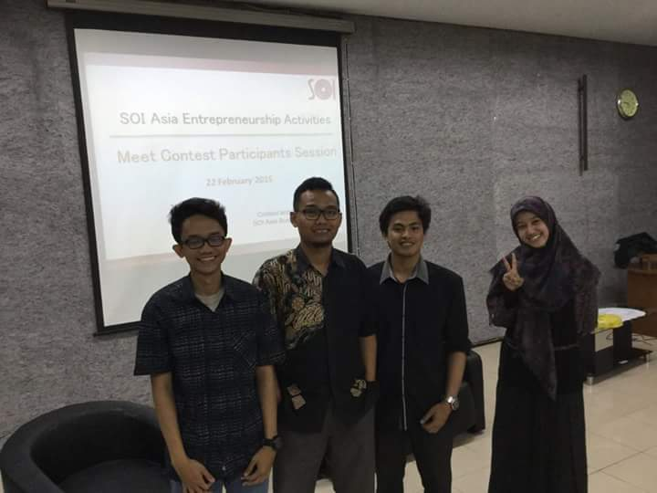

Empat Santri PPM LDII Menjuarai Kompetisi Rancangan Bisnis se-Asia
Siduta.com – Sarjana yang Mubaligh, Mubaligh yang Sarjana. Slogan ini tidaklah asing bagi para santri Pondok Pesantren Mahasiswa (PPM) di seluruh Indonesia. Mengaji dan kuliah adalah kegiatan rutin bagi para santri di PPM. Namun kegiatan rutin ini tidaklah berlaku bagi keempat santri PPM Malang Raya. Disamping mengaji dan kuliah, mereka pun bersemangat berkarya dengan menuangkan ide dalam proposal bisnis yang akhirnya berhasil membawa mereka menjadi Juara I Kompetisi Bussines Plan Contest at SOI Asian 2014-2015 di bulan Januari lalu. Keempat santri PPM ini menunjukkan bahwa menjadi santri yang rutin mengaji dan kuliah, tidak menghalangi menjadi pemuda Lembaga Dakwah Islam Indonesia (LDII) yang berprestasi, professional, religius, inovatif dan kreatif dalam berkarya bagi negeri tercinta.
Fadli, Romdan, Yoga dan Tami sebagai pemateri dalam acara Workshop “Development of Edhet after Contest” disaksikan oleh Mr. Goi Hoi Chin (Research Assistant Entrepreneurship Network dari SOI ASIA ) di Ruang Biomedical FK UB. (22/2/2015)Dengan dilatarbelakangi meningkatnya jumlah angka kematian ibu pasca melahirkan, keempat santri PPM mengembangkan sebuah bussines plan alat deteksi pendarahan pasca melahirkan yang disebut EDHET (Early Detection of Hemorrhagic Postpartum). Mereka adalah mahasiswa aktif Universitas Brawijaya (UB), Fadli Fatkhurrizki (Tenik Elektro/FT 2012), Romdan Muhammad Ubaidilah (Teknik Informatika/FILKOM 2012), Nabila Alri Hutami (Kebidanan/FK 2012), dan Arga Yoga Adearta Pratama (Teknik Informatika/FILKOM 2012).
Fadli dan kawan-kawan berhak untuk mendapatkan kesempatan berkunjung selama satu minggu ke Jepangdan mendapatkan bimbingan dari Profesor – profesor di Keio University pada akhir tahun 2015 mendatang. Selain itu, EDHET juga telah mendapat respon positif dari Ikatan Bidan Indonesia (IBI). Disampaikan Yoga bahwa timnya telah mendapatkan tawarkan dari IBI untuk dapat memasukkan EDHET sebagai salah satu bagian dari Bidan Kit yang biasa diberikan bagi Bidan baru. Untuk dapat meraih gelar juara tersebut, tim EDHET terlebih dahulu harus bersaing ketat dengan 30 tim lain dari Indonesia maupun tiga negara lainnya : Myanmar, Malaysia dan Jepang.
Sebagai pemuda-pemudi LDII yang aktif mengikuti pengajian di PPM Al-Kautsar dan PPM Baitul Jannah (PPM Malang Raya), mereka pun harus pandai memanajemen waktu antara mengaji, kuliah dan mengerjakan EDHET. “Ketika kuliah dan mondok saling berdampingan,,ternyata bukan jadi penghalang untuk bisa berprestasi. Ketika kita menolong agamanya Allah, pasti Allah juga akan menolong kita,” ujar Yoga.
Tami juga memberi pesan motvasi untuk pemuda-pemudi LDII lain saat mengikuti kompetisi apapun yaitu “Sebenarnya kunci segalanya adalah usaha, doa dan yakin. Kalau kompetisi dalam grup, ditambah lagi rukun dan kompak. Selebihnya itu, setiap tujuan diutamakan untuk kebaikan masyarakat banyak. InsyaAllah menang. Jangan berpikir keuntungannya dahulu, tapi pikirkanlah tentang manfaatnya.” tuturnya. (Rizq Nastiti)